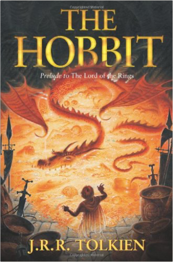
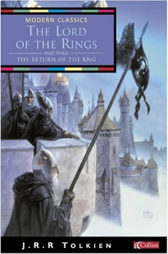
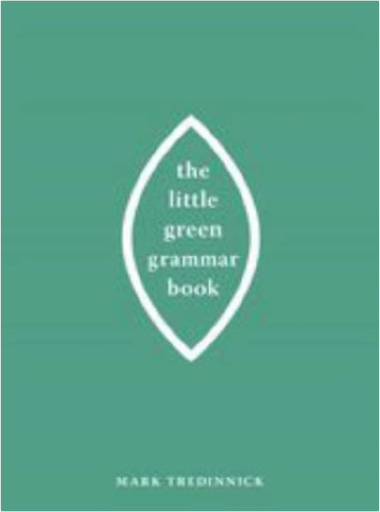
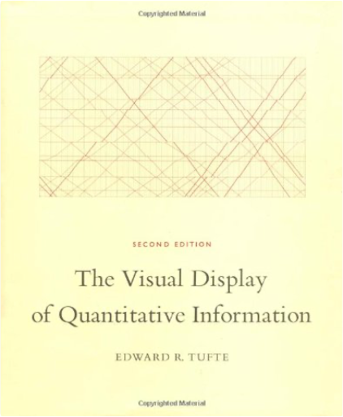

 HobbitJ R R Tolkien  The Hobbit is the unforgettable story of Bilbo, a peace-loving hobbit, who embarks on a strange and magical adventure. A timeless classic. Bilbo Baggins enjoys a quiet and contented life, with no desire to travel far from the comforts of home; then one day the wizard Gandalf and a band of dwarves arrive unexpectedly and enlist his services — as a burglar — on a dangerous expedition to raid the treasure-hoard of Smaug the dragon. Bilbo's life is never to be the same again. Seldom has any book been so widely read and loved as J.R.R. Tolkien's classic tale, 'The Hobbit'. Since its first publication in 1937 it has remained in print to delight each new generation of readers all over the world, and its hero, Bilbo Baggins, has taken his place among the ranks of the immortals of fiction.  Lord of the RingsJ R R Tolkien The armies of the Dark Lord are massing as his evil shadow spreads ever wider. Men, dwarves, elves and ents unite forces to do battle against the Dark. Meanwhile, Frodo and Sam struggle further into Mordor in their heroic quest to destroy the One Ring.  In a sleepy village in the Shire, a young hobbit is entrusted with an immense task. He must make a perilous journey across Middle-earth to the Crack of Doom, there to destroy the Ruling Ring of Power - the only thing that prevents the Dark Lord's evil dominion.  The classic bestseller behind this year's biggest movie, this definitive paperback edition features nine illustrations and two maps drawn by J.R.R. Tolkien, and a preface by Christopher Tolkien. Bilbo Baggins is a hobbit who enjoys a comfortable, unambitious life, rarely travelling further than the pantry of his hobbit-hole in Bag End. But his contentment is disturbed when the wizard, Gandalf, and a company of thirteen dwarves arrive on his doorstep one day to whisk him away on an unexpected journey 'there and back again'. They have a plot to raid the treasure hoard of Smaug the Magnificent, a large and very dangerous dragon! The prelude to The Lord of the Rings, The Hobbit has sold many millions of copies since its publication in 1937, establishing itself as one of the most beloved and influential books of the twentieth century.  The Company of the Ring is sundered. Frodo and Sam continue their journey alone down the great River Anduin - alone that is, save for a mysterious creeping figure that follows wherever they go... | Wicked Sweet IndulgencesSusan Tomnay Contains recipes for rich dark chocolate, luscious, creamy meringue, gooey deserts and sweet morsels to serve with coffee. Each recipe in this book includes a photograph and simple instructions.  The Little Green Grammar BookMark Tredinnick What really goes on inside a sentence? What is your subject, and where is your verb, and what is its tense, and where is your modifier, and why does it matter? Where do you need a comma, and where do you not? Why are dashes and semicolons so misunderstood? When is it which and when is it that? In The Little Green Grammar Book, Mark Tredinnick asks and answers the tough grammar questions—big and small—with the same verve and authority readers encountered in The Little Red Writing Book. The Little Green Grammar Book does for grammar what The Little Red Writing Book did for style. It will have you writing like a writer in no time.  The Visual Display of Quantitative InformationEdward R. Tufte Hardcover: 200 pages Publisher: Graphics Pr; 2nd edition (May 2001) Language: English ISBN-10: 0961392142 ISBN-13: 978-0961392147 Product Dimensions: 10.7 x 8.9 x 0.8 inches |

Doddridge Library
Collection Total:
417 Items
417 Items
Last Updated:
Apr 21, 2020
Apr 21, 2020
 Made with Delicious Library
Made with Delicious Library